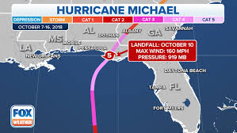
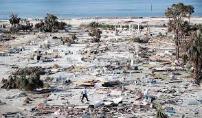

Hurricane Michael
Hurricane Michael made landfall as an unprecedented Category 5 Hurricane in the Florida Panhandle region with maximum sustained wind speeds of 140 knots (161 mph) and a minimum pressure 919 mb. The storm caused catastrophic damage from wind and storm surge, particularly in the Panama City Beach to Mexico Beach to Cape San Blas areas. The widespread damage spread well inland as Hurricane Michael remained at hurricane strength into southwest Georgia.
Storm History
Major Hurricane Michael was the 13th named storm of the 2018 Atlantic Hurricane Season. So far, there have been 15 named storms during the 2018 Atlantic Hurricane Season - 7 tropical storms and 8 hurricanes. Two of those eight hurricanes strengthened into a major hurricane: Florence and Michael. Catastrophic damage from wind extended from the coast and well inland into southwest Georgia. In the Panama City area, Tyndall Air Force Base reported a maximum wind gust of 139 mph at Tyndall Air Force Base before the observation systems stopped reporting around 12:24PM EDT.
Damages & Facts
- 35 deaths have been attributed to Hurricane Michael
- Hurricane Michael made landfall near Mexico Beach on the Florida Panhandle as a Category 4 storm early Wednesday afternoon, Oct. 10, 2018
- Hurricane Michael was the first Category 4 storm in recorded history to make landfall in the northeast Gulf Coast.
- Communities from the Florida Panhandle through Georgia to the Carolinas and Virginia are still cleaning up, clearing debris.
- Property damage is estimated at more than $4.5 billion
